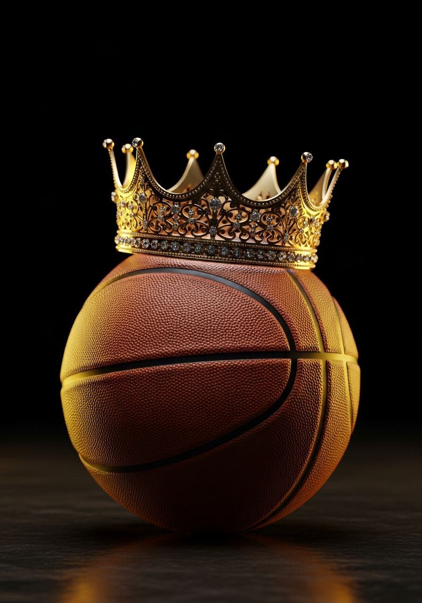

Drafted #1 overall in 2003 straight from high school, LeBron James entered the NBA with expectations no athlete had ever carried—and exceeded every single one across 21+ seasons.

The GOAT conversation isn't just about basketball—it's about how we measure greatness. Do we value peak dominance or sustained excellence? Rings or individual impact?
LeBron James is the greatest basketball player of all time because his unprecedented combination of longevity, versatility, statistical dominance, and sustained excellence across two decades surpasses any single peak performance in NBA history.
No player has sustained elite-level play for as long. Year 21 and still averaging 23+ points. Jordan retired twice. Kobe declined at 34. LeBron defied time itself.
When you combine the stats, the longevity, the versatility, and the impact off the court—no one in NBA history matches the totality of what LeBron has built. That's the GOAT.
1. ESPN. "LeBron James Career Statistics." espn.com/nba/player/stats/_/id/1966/lebron-james. Accessed May 2025.
2. Associated Press. "LeBron James passes Kareem Abdul-Jabbar to become NBA's all-time leading scorer." 7 Feb. 2023.
3. Basketball Reference. "LeBron James Stats." basketball-reference.com/players/j/jamesle01.html. Accessed May 2025.
4. LeBron James Family Foundation. "I PROMISE School." lebronjamesfamilyfoundation.org/i-promise-school/. School opened July 2018, Akron, Ohio.
5. McMenamin, Dave and Tim Bontemps. "LeBron James surpasses Kareem Abdul-Jabbar as NBA's all-time scoring leader." ESPN, 7 Feb. 2023.
6. (Primary) NBA.com Official Records — LeBron James: 4x Champion (2012, 2013, 2016, 2020), 4x Finals MVP, 20x All-Star, only player to win Finals MVP with 3 franchises.